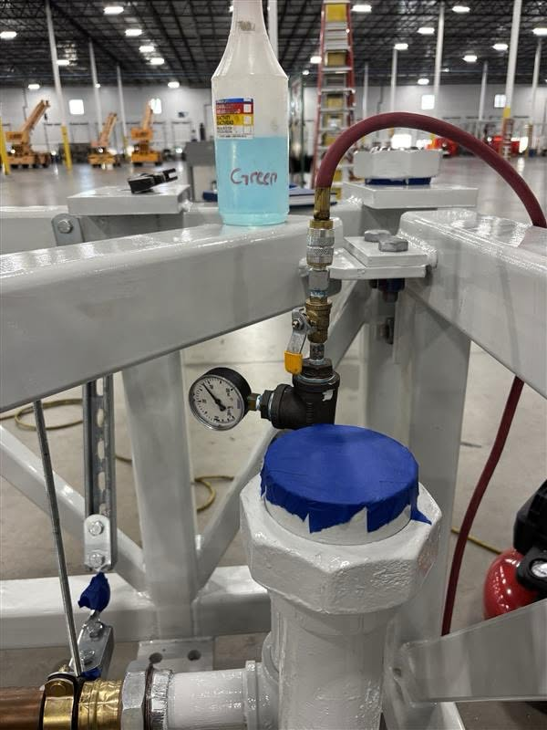
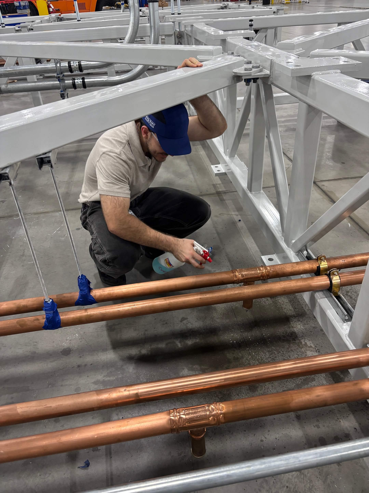

Integra required a fixture capable of pressure-testing coolant line assemblies across two regimes — positive pneumatic pressure up to 50 PSI and vacuum decay down to −15 inHg. The system had to hold repeatable test conditions while remaining manufacturable within a short lead time.
I owned the fixture from requirements through validation — conducting trade studies, selecting materials, generating drawings with full GD&T, specifying fastener torque, and executing a two-stage validation protocol before handing off to the quality team for long-term use.
I evaluated multiple frame and fixture configurations against manufacturing lead time, operator ergonomics, and repeatable pressure response. The final concept prioritized simple setup, rigid support, and reliable isolation of the coolant line assembly during testing.
Fastener torque requirements were calculated from first principles using recommended friction factors for steel-on-steel interfaces — ensuring consistent seating force across all fasteners without thread stripping or joint relaxation under cyclic pressure loading.
Validation followed a two-stage protocol to isolate fixture performance from assembly variables.
Stage 1 established a standalone baseline leak rate for the fixture itself before any coolant lines were introduced. Stage 2 tested the coolant line assemblies under the full dual-regime protocol. The system isolated sub-surface fabrication defects undetectable by visual inspection — preventing an estimated $2M+ in reconstruction costs including site access, labor, and component replacement.
Two iterations were completed. The first confirmed the fixture architecture and pressure protocol worked across both regimes. The second rationalized the BOM — reducing fastener counts and frame members against the validated load cases to minimize material cost while maintaining structural and test margins.
After the fixture isolated a leak, soapy water was used to locate the failure path directly. Bubbles formed at the leak site, making the issue visible without cutting into the assembly or relying only on pressure gauge behavior.
This gave the quality team a simple confirmation step: the pressure and vacuum test identified that a leak existed, and the soapy water check showed where the leak was occurring.

The system met all requirements and was adopted by the quality engineering team for long-term use. Two optimizations would be targeted in a third iteration:
Replace manual pressure gauge readings with a digital transducer and data logger for continuous monitoring, reduced operator variability, and permanent test records per assembly.
Replace fixed-diameter plates with interchangeable adapters to extend fixture applicability across Integra's full product line without a new fixture build per geometry.